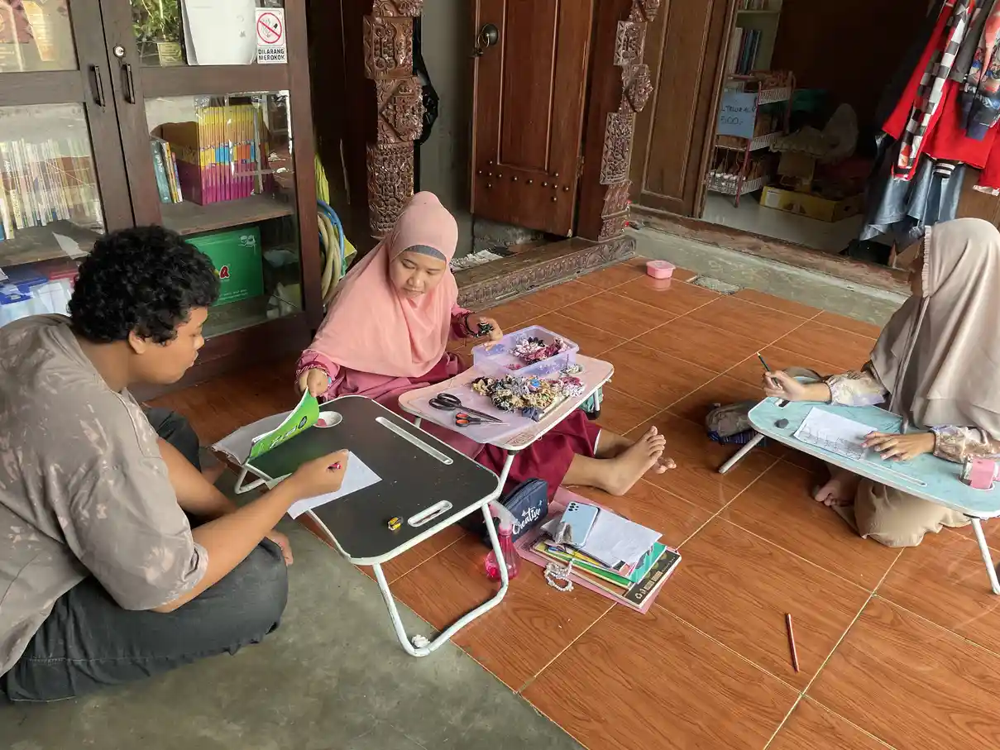
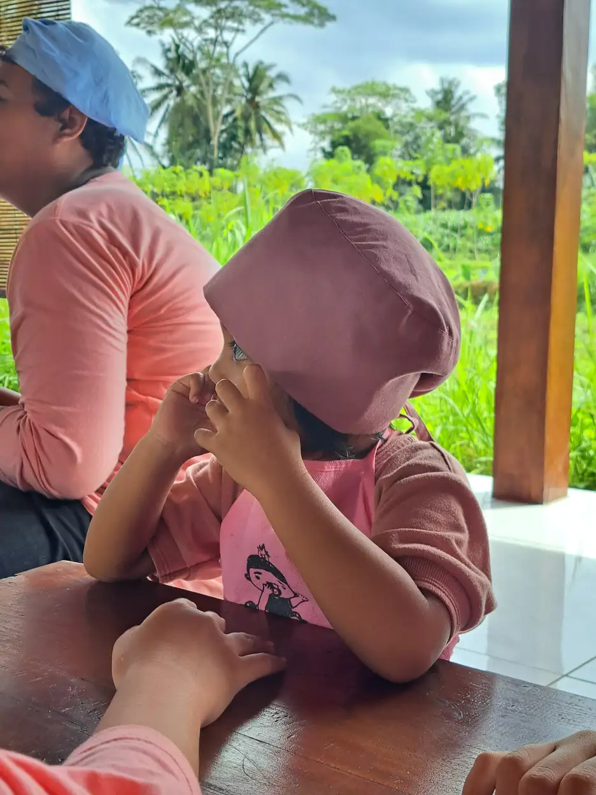
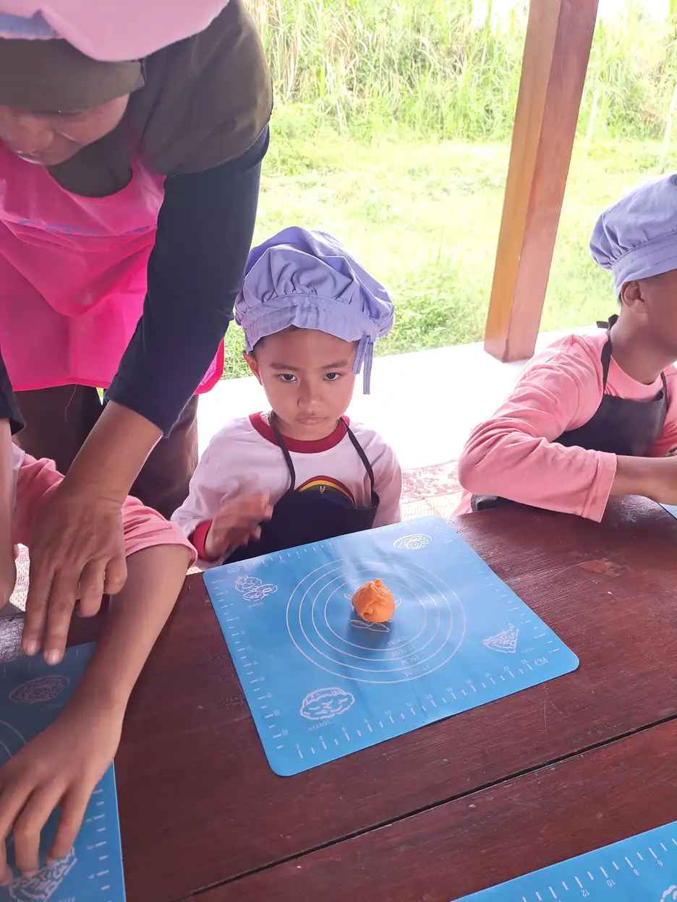

Homeschooling adalah jalur pendidikan alternatif yang diselenggarakan di lingkungan rumah atau di luar sekolah formal, dengan orang tua sebagai penanggung jawab utama proses belajar anak. Di Indonesia, semakin banyak keluarga yang memilih homeschooling, terutama bagi anak berkebutuhan khusus (ABK) yang memerlukan pendekatan belajar yang lebih personal dan fleksibel.
Bagi orang tua yang memiliki anak dengan kebutuhan khusus, pertanyaan seperti "apa itu homeschooling?", "berapa biaya homeschooling?", dan "apakah homeschooling dapat ijazah?" kerap muncul sebelum mereka mengambil keputusan. Kekhawatiran ini sangat wajar karena menyangkut masa depan pendidikan anak yang dicintai.
Di Yayasan Ukhuwah Kaffah Amanatullah (YUKA), kami telah mendampingi banyak keluarga yang menjalankan homeschooling untuk anak berkebutuhan khusus. Melalui pengalaman tersebut, kami memahami bahwa setiap anak memiliki keunikan dalam cara mereka belajar. Artikel ini disusun sebagai panduan lengkap bagi orang tua yang sedang mempertimbangkan atau telah menjalankan homeschooling ABK, dilengkapi informasi tentang jenis, biaya, legalitas, dan tips praktis yang bisa langsung diterapkan.
Daftar Isi
Apa Itu Homeschooling?
Homeschooling adalah sistem pendidikan yang dilakukan secara sadar, teratur, dan terarah oleh keluarga atau orang tua di rumah atau di lingkungan lain di luar sekolah formal. Dalam konteks pendidikan di Indonesia, homeschooling dikenal juga dengan istilah "sekolah rumah" dan telah memiliki payung hukum yang jelas.
Berbeda dengan pendidikan formal di sekolah, homeschooling memberikan keleluasaan bagi orang tua untuk menyesuaikan kurikulum, metode pengajaran, jadwal belajar, dan lingkungan belajar sesuai dengan kebutuhan unik setiap anak. Pendekatan ini menjadikan homeschooling sangat relevan bagi keluarga yang memiliki anak dengan kebutuhan khusus.
Secara historis, homeschooling bukanlah konsep baru. Sebelum sistem sekolah formal berkembang luas, pendidikan di rumah merupakan bentuk pembelajaran yang paling umum di berbagai belahan dunia. Di Indonesia, homeschooling mulai mendapatkan perhatian luas sejak awal tahun 2000-an, seiring meningkatnya kesadaran orang tua akan pentingnya pendidikan yang sesuai dengan karakter dan kebutuhan individual anak.
Dalam praktiknya, orang tua yang menyelenggarakan homeschooling tidak harus mengajar sendiri seluruh materi pelajaran. Mereka dapat memanfaatkan berbagai sumber belajar seperti tutor, kursus daring, perpustakaan, museum, komunitas belajar, dan bahkan kerja sama dengan lembaga pendidikan nonformal. Yang terpenting adalah orang tua berperan sebagai fasilitator dan pengarah utama dalam perjalanan belajar anak.
Penting untuk dipahami bahwa homeschooling bukan berarti mengisolasi anak dari dunia luar. Justru sebaliknya, homeschooling yang dijalankan dengan baik akan membuka peluang sosialisasi yang lebih luas dan bermakna bagi anak. Anak bisa belajar berinteraksi dengan berbagai kalangan usia dan latar belakang, tidak terbatas pada teman sebaya di lingkungan kelas saja.
Bagi keluarga dengan anak berkebutuhan khusus, memahami konsep pendidikan khusus secara menyeluruh akan sangat membantu dalam merancang program homeschooling yang efektif dan sesuai kebutuhan.
Mengapa Homeschooling Cocok untuk Anak Berkebutuhan Khusus?
Tidak semua anak berkebutuhan khusus bisa berkembang optimal di lingkungan sekolah formal. Ada banyak alasan mengapa homeschooling anak berkebutuhan khusus menjadi pilihan yang tepat bagi sebagian keluarga. Berikut beberapa alasan utamanya:
1. Kurikulum yang Disesuaikan dengan Kemampuan Anak
Setiap anak berkebutuhan khusus memiliki profil kemampuan yang berbeda-beda. Ada yang unggul di bidang tertentu namun mengalami hambatan di bidang lain. Homeschooling memungkinkan orang tua merancang kurikulum individual yang benar-benar sesuai dengan kekuatan dan kebutuhan belajar anak. Tidak ada tekanan untuk mengikuti kecepatan belajar kelas yang mungkin terlalu cepat atau justru terlalu lambat bagi anak.
Pemahaman tentang kecerdasan majemuk sangat membantu orang tua dalam mengenali potensi anak dan merancang kegiatan belajar yang memanfaatkan kekuatan alami mereka. Misalnya, anak yang memiliki kecerdasan kinestetik tinggi akan lebih mudah belajar melalui aktivitas fisik dan praktik langsung.
2. Lingkungan Belajar yang Lebih Aman dan Nyaman
Banyak anak berkebutuhan khusus yang mengalami kecemasan, stres berlebihan, atau bahkan perundungan di lingkungan sekolah formal. Anak dengan gangguan spektrum autisme, misalnya, sering kali kewalahan dengan stimulus berlebihan di kelas yang ramai. Homeschooling memberikan lingkungan belajar yang lebih tenang, terkontrol, dan bebas dari tekanan sosial yang tidak sehat.

3. Jadwal Belajar yang Fleksibel
Anak berkebutuhan khusus sering kali memiliki jadwal terapi, konsultasi dokter, atau sesi rehabilitasi yang harus dijalani secara rutin. Homeschooling memungkinkan keluarga mengatur jadwal belajar yang tidak bertabrakan dengan kegiatan terapi. Selain itu, orang tua bisa menyesuaikan waktu belajar dengan kondisi optimal anak. Sebagian anak lebih fokus di pagi hari, sementara yang lain justru lebih produktif di siang atau sore hari.
4. Perhatian Individual yang Lebih Intensif
Di sekolah formal, satu guru biasanya menangani 20 hingga 40 siswa sekaligus. Kondisi ini membuat guru sulit memberikan perhatian khusus kepada setiap anak. Dalam homeschooling, rasio pengajar dan siswa jauh lebih kecil, bahkan bisa satu banding satu. Hal ini memungkinkan orang tua atau tutor untuk memantau perkembangan anak secara lebih detail dan segera memberikan bantuan ketika anak mengalami kesulitan.
5. Mengurangi Tekanan Sosial dan Perbandingan
Anak berkebutuhan khusus, terutama yang mengalami slow learner atau keterlambatan perkembangan, sering kali merasa rendah diri ketika dibandingkan dengan teman-teman sebayanya di sekolah. Homeschooling menghilangkan tekanan kompetisi yang tidak sehat dan memungkinkan anak berkembang sesuai kecepatannya sendiri, sehingga rasa percaya diri anak bisa tumbuh lebih baik.
6. Keterlibatan Orang Tua yang Lebih Mendalam
Peran orang tua dalam pendidikan anak berkebutuhan khusus sangat menentukan. Dengan homeschooling, orang tua tidak hanya menjadi pendamping, tetapi juga menjadi pengamat utama perkembangan anak. Orang tua bisa langsung melihat kesulitan dan kemajuan anak, sehingga bisa segera melakukan penyesuaian strategi belajar yang diperlukan.
"Setiap anak istimewa memiliki caranya sendiri untuk belajar dan berkembang. Tugas kita sebagai orang tua dan pendidik adalah menemukan cara tersebut dan memfasilitasinya dengan penuh cinta dan kesabaran."
Jenis-Jenis Homeschooling
Sebelum memutuskan untuk memulai homeschooling, penting bagi orang tua untuk memahami berbagai jenis homeschooling yang tersedia. Berdasarkan Permendikbud No. 129 Tahun 2014, terdapat tiga kategori utama sekolah rumah yang diakui di Indonesia:
1. Homeschooling Tunggal
Homeschooling tunggal adalah model pendidikan rumah yang diselenggarakan oleh satu keluarga secara mandiri. Orang tua bertanggung jawab penuh atas perencanaan kurikulum, pelaksanaan pembelajaran, dan evaluasi hasil belajar anak. Model ini memberikan fleksibilitas maksimal karena seluruh aspek pendidikan dapat disesuaikan sepenuhnya dengan kebutuhan anak.
Keunggulan homeschooling tunggal meliputi:
- Kebebasan penuh dalam menentukan kurikulum dan metode belajar
- Jadwal belajar sepenuhnya fleksibel dan dapat disesuaikan dengan ritme anak
- Materi pelajaran bisa difokuskan pada bidang yang menjadi minat dan kekuatan anak
- Orang tua dapat langsung memantau perkembangan anak secara kontinu
Namun, tantangan dari model ini adalah orang tua perlu memiliki pemahaman yang cukup tentang pendidikan dan siap meluangkan waktu yang signifikan untuk mendampingi anak belajar. Bagi anak berkebutuhan khusus, orang tua juga perlu membekali diri dengan pengetahuan tentang karakteristik kebutuhan khusus anak mereka.
2. Homeschooling Majemuk
Homeschooling majemuk melibatkan dua keluarga atau lebih yang sepakat untuk menyelenggarakan kegiatan belajar bersama. Masing-masing keluarga bisa saling berbagi peran, misalnya satu orang tua mengajar matematika sementara orang tua lainnya mengajar bahasa. Model ini memungkinkan anak mendapatkan pengalaman sosialisasi yang lebih kaya dengan teman-teman sebayanya.
Bagi anak berkebutuhan khusus, homeschooling majemuk menawarkan kesempatan untuk belajar berinteraksi sosial dalam kelompok kecil yang aman dan terkontrol. Orang tua juga bisa saling bertukar pengalaman dan memberikan dukungan moral dalam perjalanan mendidik anak mereka.
3. Homeschooling Komunitas
Homeschooling komunitas adalah gabungan dari beberapa keluarga yang membentuk komunitas belajar terstruktur. Komunitas ini biasanya memiliki kurikulum bersama, jadwal kegiatan rutin, dan bahkan bisa bekerja sama dengan tutor atau lembaga pendidikan profesional. Model ini menyerupai sekolah mini dengan suasana yang lebih fleksibel dan inklusif.
Keunggulan homeschooling komunitas antara lain:
- Beban pengajaran terbagi di antara beberapa orang tua atau tutor
- Anak mendapatkan sosialisasi yang lebih beragam
- Sumber belajar dan fasilitas bisa digunakan bersama sehingga lebih efisien
- Terdapat struktur yang lebih jelas dalam proses belajar mengajar
- Bisa bekerja sama dengan PKBM (Pusat Kegiatan Belajar Masyarakat) untuk legalitas

Tips Memilih Jenis Homeschooling
Untuk anak berkebutuhan khusus yang baru memulai homeschooling, disarankan memulai dengan model tunggal terlebih dahulu agar orang tua dapat memahami kebutuhan belajar anak secara mendalam. Setelah menemukan pola yang tepat, orang tua bisa mempertimbangkan untuk bergabung dengan komunitas homeschooling agar anak mendapat pengalaman sosialisasi yang lebih luas.
Biaya Homeschooling di Indonesia
Salah satu pertanyaan yang paling sering diajukan oleh orang tua adalah: "Berapa biaya homeschooling?" Jawabannya sangat bervariasi tergantung pada model yang dipilih, sumber belajar yang digunakan, dan kebutuhan khusus anak. Berikut gambaran umum biaya homeschooling di Indonesia:
Homeschooling Mandiri (Rp500.000 - Rp1.500.000 per bulan)
Model homeschooling mandiri adalah pilihan yang paling hemat secara finansial. Biaya ini mencakup pembelian buku dan bahan ajar, alat tulis dan perlengkapan belajar, akses platform belajar daring, dan biaya kegiatan lapangan sesekali. Orang tua yang memilih model ini perlu bersedia meluangkan waktu dan energi yang cukup besar untuk mengajar dan mendampingi anak secara langsung.
Dengan memanfaatkan sumber belajar gratis yang tersedia di internet, perpustakaan umum, dan komunitas, biaya ini bahkan bisa ditekan lebih rendah lagi. Banyak orang tua kreatif yang berhasil menjalankan homeschooling berkualitas dengan anggaran yang sangat efisien.
Homeschooling dengan Tutor (Rp1.500.000 - Rp3.500.000 per bulan)
Jika orang tua merasa perlu bantuan profesional dalam mengajar mata pelajaran tertentu, mereka bisa mempekerjakan tutor privat. Biaya tutor bervariasi tergantung pada kualifikasi, pengalaman, dan frekuensi pertemuan. Untuk anak berkebutuhan khusus, sebaiknya mencari tutor yang memiliki latar belakang pendidikan luar biasa atau pengalaman menangani ABK.
Homeschooling melalui Lembaga (Rp2.000.000 - Rp5.000.000 per bulan)
Beberapa lembaga di Indonesia menyediakan program homeschooling yang terstruktur, lengkap dengan kurikulum, materi ajar, bimbingan tutor, dan pendampingan administratif termasuk pendaftaran ujian kesetaraan. Biaya melalui lembaga memang lebih tinggi, namun orang tua mendapatkan kemudahan dalam hal pengelolaan kurikulum dan legalitas.
Biaya Tambahan untuk Anak Berkebutuhan Khusus
Untuk homeschooling ABK, perlu diperhitungkan biaya tambahan yang meliputi:
- Terapi rutin: Terapi wicara, terapi okupasi, terapi perilaku, atau fisioterapi dengan biaya rata-rata Rp150.000 - Rp500.000 per sesi
- Asesmen dan evaluasi: Pemeriksaan psikologis berkala yang membantu memantau perkembangan anak, dengan biaya sekitar Rp500.000 - Rp2.000.000 per asesmen
- Alat bantu belajar khusus: Media visual, alat peraga sensorik, atau perangkat teknologi assistif yang disesuaikan dengan kebutuhan anak
- Pelatihan orang tua: Workshop atau seminar tentang cara menangani dan mendidik anak berkebutuhan khusus
Bandingkan dengan Biaya Sekolah Lain
Sebagai perbandingan, biaya Sekolah Luar Biasa (SLB) negeri bisa jauh lebih terjangkau karena mendapat subsidi pemerintah. Namun, ketersediaan SLB yang sesuai dengan kebutuhan anak di setiap daerah masih terbatas. Sementara sekolah inklusi swasta bisa mematok biaya Rp1.000.000 hingga Rp5.000.000 per bulan. Memahami kelebihan dan kekurangan masing-masing pilihan pendidikan akan membantu orang tua mengambil keputusan yang terbaik.
Legalitas dan Ijazah Homeschooling
Pertanyaan "apakah homeschooling dapat ijazah?" adalah salah satu kekhawatiran terbesar orang tua. Jawaban singkatnya: ya, homeschooling diakui secara hukum di Indonesia dan anak homeschooling bisa mendapatkan ijazah yang setara dengan ijazah sekolah formal.
Dasar Hukum Homeschooling di Indonesia
Homeschooling memiliki dasar hukum yang kuat di Indonesia. Beberapa regulasi yang menjadi landasan hukumnya meliputi:
- UU No. 20 Tahun 2003 tentang Sistem Pendidikan Nasional, yang mengakui tiga jalur pendidikan: formal, nonformal, dan informal. Homeschooling termasuk dalam jalur pendidikan informal.
- Permendikbud No. 129 Tahun 2014 tentang Sekolah Rumah, yang secara spesifik mengatur penyelenggaraan homeschooling di Indonesia, termasuk definisi, penyelenggaraan, dan evaluasinya.
- PP No. 17 Tahun 2010 tentang Pengelolaan dan Penyelenggaraan Pendidikan, yang menjamin hak setiap warga negara untuk mendapatkan pendidikan melalui berbagai jalur.
Cara Mendapatkan Ijazah melalui Homeschooling
Anak yang menjalani homeschooling dapat memperoleh ijazah yang diakui negara melalui mekanisme ujian kesetaraan yang diselenggarakan oleh PKBM (Pusat Kegiatan Belajar Masyarakat) atau lembaga pendidikan nonformal yang ditunjuk pemerintah. Berikut jenjangnya:
- Paket A - setara dengan Sekolah Dasar (SD)
- Paket B - setara dengan Sekolah Menengah Pertama (SMP)
- Paket C - setara dengan Sekolah Menengah Atas (SMA)
Ijazah kesetaraan ini memiliki kedudukan yang sama dengan ijazah pendidikan formal. Artinya, pemegang ijazah Paket C dapat mendaftar ke perguruan tinggi negeri maupun swasta, melamar pekerjaan, dan mengikuti seleksi lainnya yang mensyaratkan ijazah SMA.
Langkah Administratif yang Perlu Dilakukan
Agar homeschooling berjalan sesuai koridor hukum, orang tua perlu melakukan beberapa langkah administratif berikut:
- Mendaftarkan kegiatan homeschooling ke dinas pendidikan kabupaten/kota setempat agar tercatat secara resmi
- Menyusun rencana pembelajaran yang mencakup kurikulum, jadwal, dan metode evaluasi yang akan digunakan
- Mendaftarkan anak ke PKBM atau lembaga pendidikan nonformal yang terakreditasi untuk memfasilitasi ujian kesetaraan
- Mengikuti ujian kesetaraan Paket A, B, atau C sesuai jenjang yang dibutuhkan
- Mendokumentasikan proses belajar anak secara teratur sebagai portofolio yang dapat menjadi bukti kegiatan pendidikan
Untuk anak berkebutuhan khusus, beberapa PKBM menyediakan akomodasi khusus dalam pelaksanaan ujian kesetaraan, seperti waktu pengerjaan tambahan, ruang ujian yang lebih tenang, atau pendamping selama ujian. Orang tua bisa berkomunikasi dengan PKBM terkait untuk mengetahui fasilitas yang tersedia.
Tips Menjalankan Homeschooling untuk ABK
Menjalankan homeschooling untuk anak berkebutuhan khusus memerlukan persiapan, kesabaran, dan strategi yang matang. Berikut beberapa tips praktis yang bisa membantu orang tua menjalankan homeschooling ABK dengan lebih efektif:
1. Lakukan Asesmen Kebutuhan Anak
Sebelum merancang program homeschooling, pastikan anak sudah menjalani asesmen komprehensif dari psikolog atau profesional yang berkompeten. Asesmen ini akan membantu mengidentifikasi kekuatan, kelemahan, gaya belajar, dan kebutuhan khusus anak secara detail. Hasil asesmen menjadi fondasi dalam menyusun rencana pembelajaran individual yang efektif.
2. Susun Rencana Pembelajaran Individual (RPI)
Berdasarkan hasil asesmen, susun Rencana Pembelajaran Individual yang mencakup tujuan belajar jangka pendek dan jangka panjang, materi yang akan diajarkan, metode pengajaran yang sesuai, dan cara evaluasi kemajuan anak. RPI harus bersifat fleksibel dan siap direvisi sesuai perkembangan anak.
3. Ciptakan Rutinitas yang Konsisten
Anak berkebutuhan khusus umumnya membutuhkan rutinitas yang terstruktur dan dapat diprediksi. Buatlah jadwal harian yang konsisten namun tetap fleksibel. Sertakan waktu belajar, waktu bermain, waktu istirahat, dan waktu terapi dalam jadwal tersebut. Gunakan alat bantu visual seperti jadwal bergambar untuk membantu anak memahami dan mengikuti rutinitas.

4. Manfaatkan Multisensorik dalam Pembelajaran
Anak berkebutuhan khusus sering kali merespons lebih baik terhadap pembelajaran yang melibatkan berbagai indera. Gunakan media visual, audio, sentuhan, dan gerakan dalam proses belajar. Misalnya, untuk mengajarkan huruf, gunakan pasir, tanah liat, atau huruf timbul yang bisa diraba. Untuk belajar berhitung, gunakan benda-benda nyata yang bisa dipegang dan dihitung langsung.
5. Integrasikan Terapi dalam Kegiatan Belajar
Salah satu keunggulan homeschooling untuk ABK adalah kemampuan untuk mengintegrasikan kegiatan terapi ke dalam proses belajar sehari-hari. Misalnya, terapi okupasi bisa dipadukan dengan kegiatan seni dan kerajinan tangan. Terapi wicara bisa disertakan dalam kegiatan membaca cerita atau bermain peran. Dengan pendekatan ini, anak mendapatkan manfaat ganda dari setiap aktivitas.
6. Bergabung dengan Komunitas Homeschooling
Jangan menjalankan homeschooling sendirian. Bergabunglah dengan komunitas homeschooling, baik secara lokal maupun daring. Komunitas ini bisa menjadi tempat berbagi pengalaman, mendapatkan ide kegiatan belajar, saling mendukung secara emosional, dan memfasilitasi sosialisasi anak. Banyak kota di Indonesia sudah memiliki komunitas homeschooling ABK yang aktif dan suportif.
7. Jaga Keseimbangan Hidup Orang Tua
Mendampingi anak berkebutuhan khusus dalam homeschooling adalah perjalanan yang menuntut energi fisik, mental, dan emosional yang besar. Orang tua perlu menjaga keseimbangan hidupnya sendiri agar tidak mengalami kelelahan berlebihan (burnout). Luangkan waktu untuk diri sendiri, minta bantuan pasangan atau keluarga besar, dan jangan ragu meminta dukungan profesional jika diperlukan.
8. Evaluasi dan Sesuaikan Secara Berkala
Lakukan evaluasi secara rutin, setidaknya setiap tiga bulan, untuk menilai efektivitas program homeschooling yang sedang berjalan. Apakah anak menunjukkan kemajuan? Apakah ada hambatan yang perlu diatasi? Apakah metode yang digunakan masih relevan? Berdasarkan hasil evaluasi, lakukan penyesuaian yang diperlukan. Ingatlah bahwa fleksibilitas adalah salah satu keunggulan utama homeschooling.
Cerita Inspiratif
Banyak anak berkebutuhan khusus yang berhasil berkembang pesat melalui homeschooling. Dengan pendekatan yang tepat dan penuh kasih sayang, anak-anak yang awalnya kesulitan mengikuti pelajaran di sekolah formal bisa menemukan cara belajar yang cocok untuk mereka. Tidak jarang, anak-anak ini justru menunjukkan bakat dan kemampuan luar biasa di bidang tertentu yang mungkin tidak pernah terungkap di lingkungan kelas konvensional.
Pendekatan YUKA: Kombinasi Homeschooling dan Terapi
Di Yayasan Ukhuwah Kaffah Amanatullah (YUKA), kami memahami bahwa pendidikan anak berkebutuhan khusus tidak bisa dipisahkan dari kegiatan terapi dan pendampingan holistik. Itulah mengapa kami mengembangkan pendekatan yang mengombinasikan elemen-elemen terbaik dari homeschooling dengan program terapi terpadu.
Melalui Sekolah Inklusi Taruna Imani yang kami kelola di Sleman, Yogyakarta, kami menerapkan prinsip-prinsip yang juga relevan bagi keluarga yang menjalankan homeschooling. Pendekatan kami mencakup beberapa aspek penting:
Pembelajaran Individual yang Terstruktur
Setiap anak di YUKA mendapatkan program pembelajaran yang dirancang khusus sesuai dengan kebutuhannya. Kami menyusun Rencana Pembelajaran Individual (RPI) berdasarkan hasil asesmen menyeluruh dan terus memperbaruinya sesuai perkembangan anak. Pendekatan ini sejalan dengan filosofi homeschooling yang mengutamakan personalisasi pembelajaran.
Integrasi Terapi dan Pendidikan
Kami tidak memisahkan antara kegiatan terapi dan kegiatan belajar. Terapi wicara, terapi okupasi, terapi perilaku, dan terapi sensorik diintegrasikan secara natural ke dalam aktivitas belajar sehari-hari. Anak tidak merasa sedang "diterapi" karena kegiatan dikemas dalam bentuk yang menyenangkan dan bermakna.
Pendampingan Keluarga
YUKA tidak hanya mendampingi anak, tetapi juga keluarganya. Kami menyadari bahwa keberhasilan pendidikan anak berkebutuhan khusus sangat bergantung pada dukungan keluarga. Melalui program edukasi orang tua, konseling keluarga, dan kelompok dukungan sebaya, kami membantu keluarga membangun kapasitas untuk mendampingi anak mereka secara optimal, baik di lingkungan sekolah maupun di rumah.
Pengembangan Keterampilan Hidup
Selain akademik, kami sangat menekankan pengembangan keterampilan hidup (life skills) bagi anak berkebutuhan khusus. Keterampilan seperti menjaga kebersihan diri, menyiapkan makanan sederhana, berkomunikasi dengan orang lain, dan mengelola emosi merupakan bekal penting yang akan menunjang kemandirian anak di masa depan. Untuk keluarga yang menjalankan homeschooling, integrasi life skills ke dalam kurikulum sangat kami anjurkan.
Pemahaman tentang berbagai model pendidikan, termasuk pendidikan inklusi, akan membantu orang tua dalam menentukan kombinasi terbaik antara homeschooling dan layanan pendidikan formal atau nonformal yang tersedia di lingkungan mereka.
"Di YUKA, kami percaya bahwa setiap anak memiliki potensi yang luar biasa. Tugas kita adalah menciptakan lingkungan belajar yang memungkinkan potensi tersebut berkembang, baik di sekolah maupun di rumah."
FAQ Seputar Homeschooling untuk Anak Berkebutuhan Khusus
1. Apakah homeschooling dapat ijazah?
Ya, anak homeschooling dapat memperoleh ijazah yang diakui negara melalui ujian kesetaraan Paket A (setara SD), Paket B (setara SMP), dan Paket C (setara SMA). Ijazah ini memiliki kedudukan hukum yang sama dengan ijazah sekolah formal berdasarkan Permendikbud No. 129 Tahun 2014, sehingga dapat digunakan untuk melanjutkan pendidikan ke jenjang berikutnya atau melamar pekerjaan.
2. Berapa biaya homeschooling di Indonesia?
Biaya homeschooling di Indonesia bervariasi mulai dari Rp500.000 hingga Rp5.000.000 per bulan, tergantung jenis dan model yang dipilih. Homeschooling mandiri dengan kurikulum sendiri bisa lebih hemat, sementara homeschooling melalui lembaga resmi atau dengan tutor khusus cenderung lebih mahal. Untuk anak berkebutuhan khusus, biaya tambahan terapi juga perlu diperhitungkan.
3. Apakah homeschooling legal di Indonesia?
Ya, homeschooling sepenuhnya legal di Indonesia. Dasar hukumnya tercantum dalam UU No. 20 Tahun 2003 tentang Sistem Pendidikan Nasional dan diperkuat oleh Permendikbud No. 129 Tahun 2014 tentang Sekolah Rumah. Orang tua yang menyelenggarakan homeschooling perlu mendaftarkan kegiatan belajar anak ke dinas pendidikan setempat agar tercatat secara resmi.
4. Apakah anak homeschooling bisa bersosialisasi dengan baik?
Tentu saja. Sosialisasi anak homeschooling tidak terbatas pada lingkungan sekolah. Anak tetap bisa bersosialisasi melalui komunitas homeschooling, kegiatan ekskurikuler, les atau kursus, kegiatan keagamaan, dan interaksi dengan tetangga serta keluarga besar. Bahkan, untuk anak berkebutuhan khusus, lingkungan sosialisasi yang lebih terkontrol justru bisa lebih mendukung perkembangan sosial mereka.
5. Bagaimana cara memulai homeschooling untuk anak berkebutuhan khusus?
Langkah pertama adalah melakukan asesmen kebutuhan anak bersama profesional (psikolog atau terapis). Kemudian, susun kurikulum individual yang sesuai dengan kemampuan dan minat anak. Daftarkan kegiatan homeschooling ke dinas pendidikan setempat. Bergabunglah dengan komunitas homeschooling ABK untuk saling mendukung. Anda juga bisa berkonsultasi dengan lembaga seperti YUKA yang berpengalaman mendampingi anak berkebutuhan khusus.
Jika Anda ingin mengetahui lebih lanjut tentang berbagai jenis kebutuhan khusus pada anak dan cara mendampingi mereka, silakan baca artikel kami tentang ABK (Anak Berkebutuhan Khusus) dan Pendidikan Khusus untuk mendapatkan pemahaman yang lebih komprehensif.
Memutuskan untuk menjalankan homeschooling bagi anak berkebutuhan khusus adalah langkah besar yang memerlukan keberanian, komitmen, dan cinta yang mendalam. Namun, dengan persiapan yang matang, dukungan komunitas, dan pendampingan profesional, homeschooling bisa menjadi jalur pendidikan terbaik yang membawa anak Anda meraih potensi tertingginya. Setiap anak berhak mendapatkan pendidikan yang sesuai dengan kebutuhannya, dan sebagai orang tua, Anda adalah orang yang paling memahami apa yang terbaik bagi anak Anda.
Jika Anda membutuhkan konsultasi atau pendampingan dalam menjalankan homeschooling untuk anak berkebutuhan khusus, jangan ragu untuk menghubungi tim YUKA. Kami siap menjadi mitra perjalanan Anda dalam mendidik dan mendampingi anak-anak istimewa menuju masa depan yang lebih cerah.